selected project
MAS One
Anesthesia administration device — A product-oriented engineering project combining mechanism design with medical system considerations. Read our paper here.
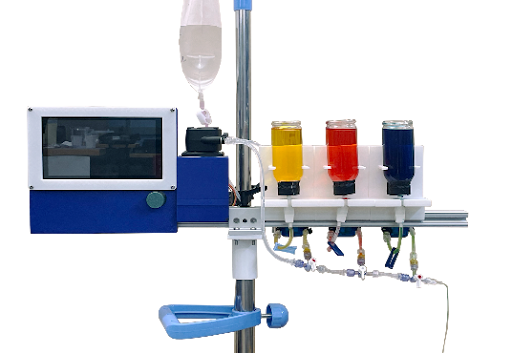
The Process

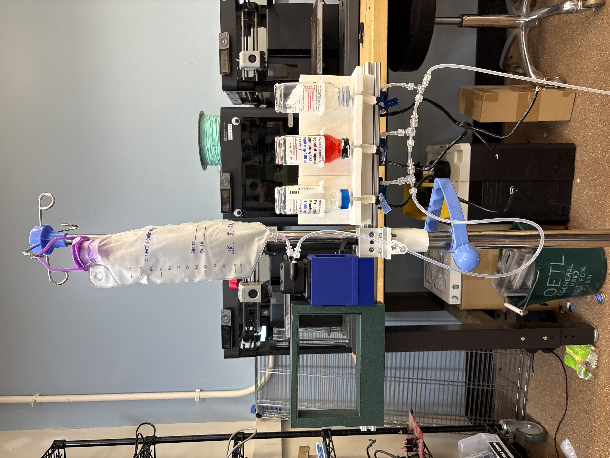
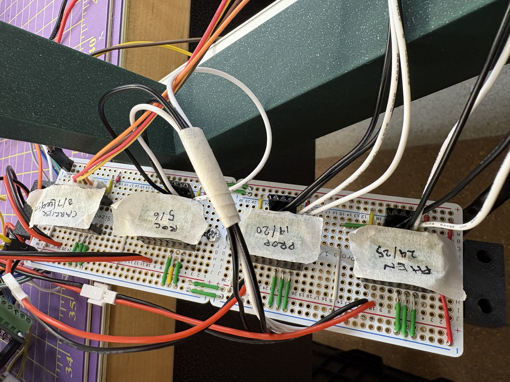
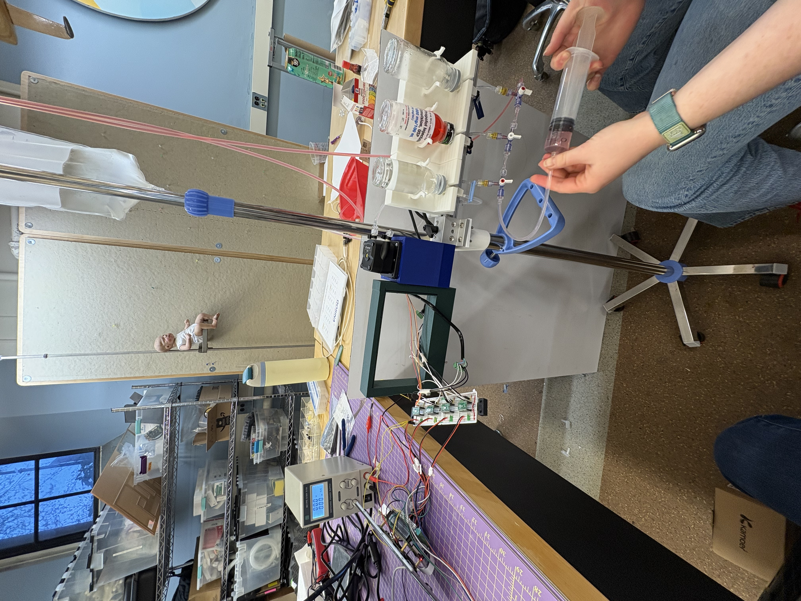
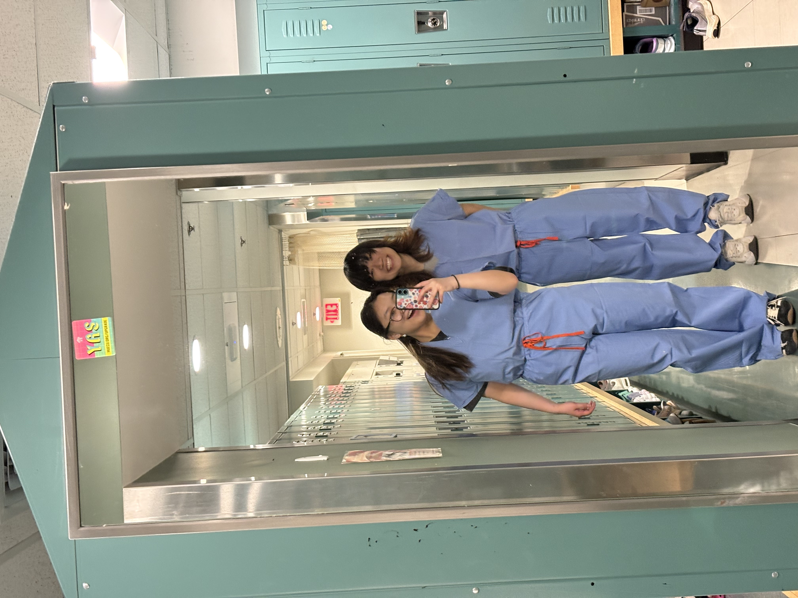
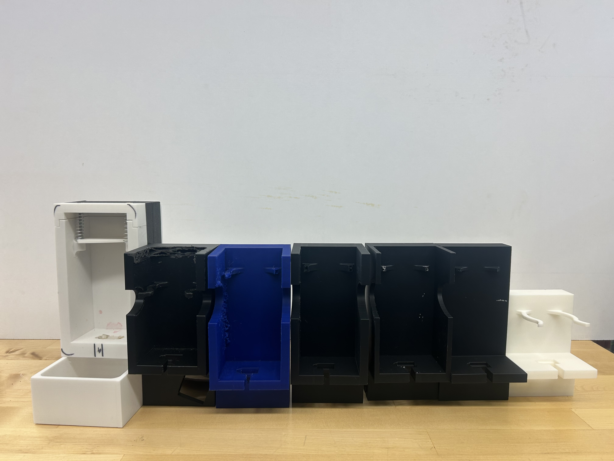
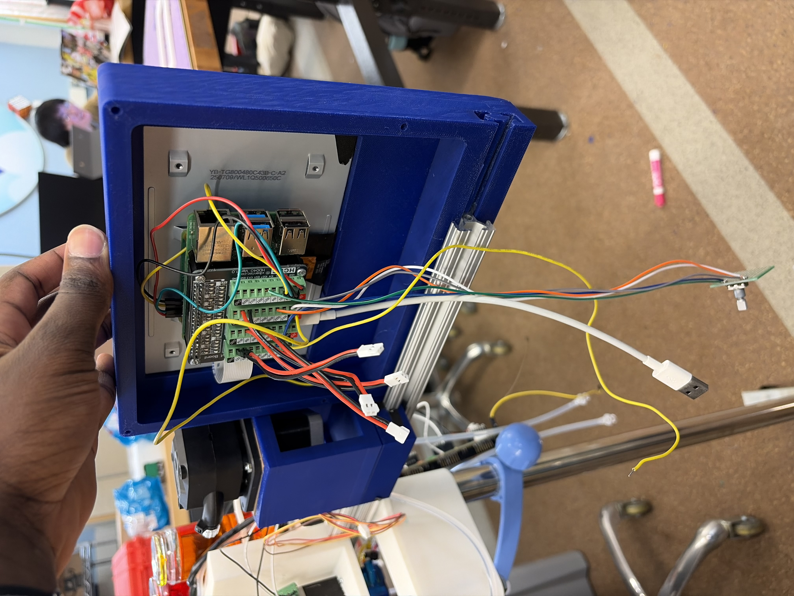
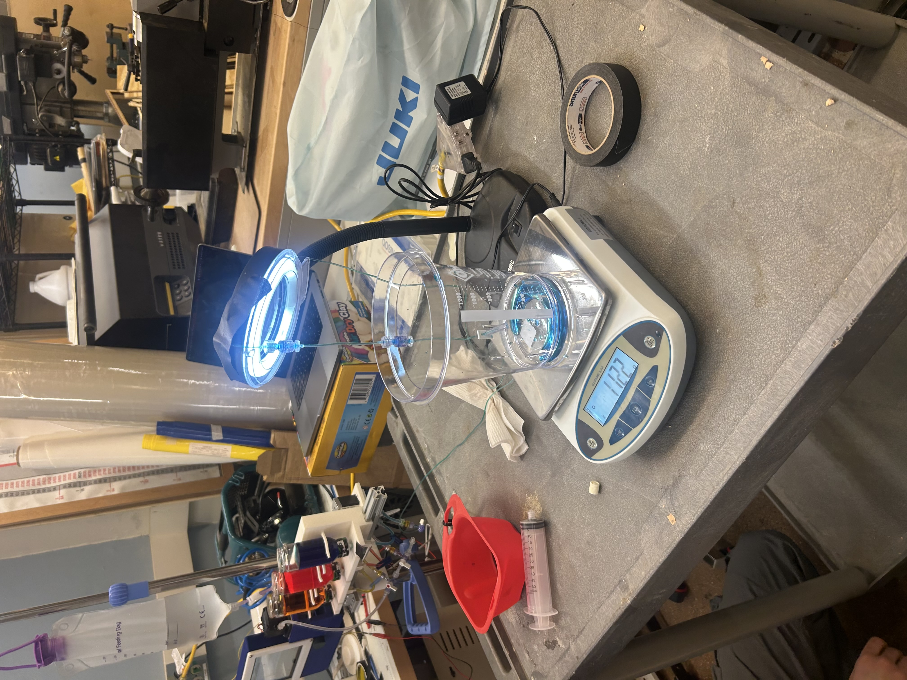
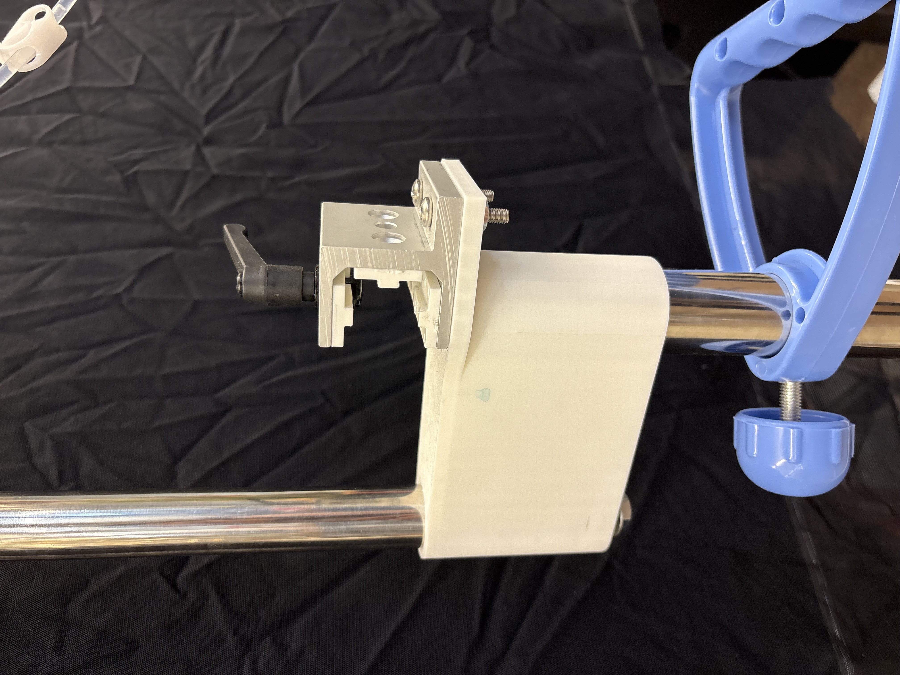
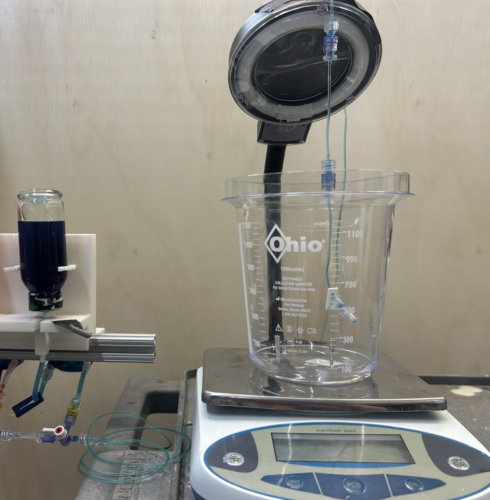


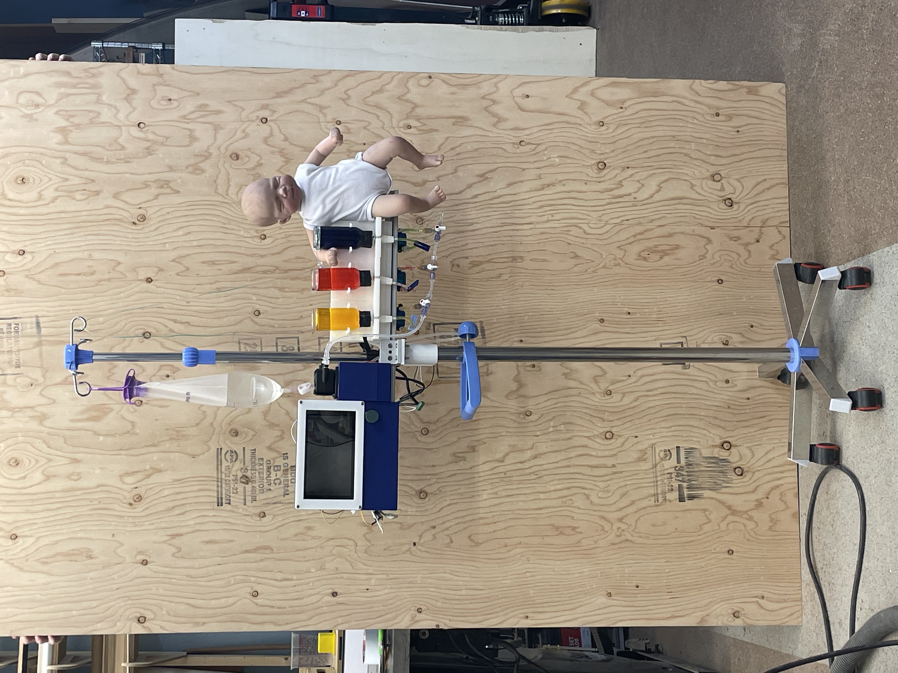
Reflection
This class was really interesting and there is so much that goes into building a medical device. The FDA requirements and procedures to follow were big for us when it came to testing. I learned a lot about system integration (electronics, pumps, form factor/housings) and how to work in a team with lots of moving parts.
← Return to My Projects